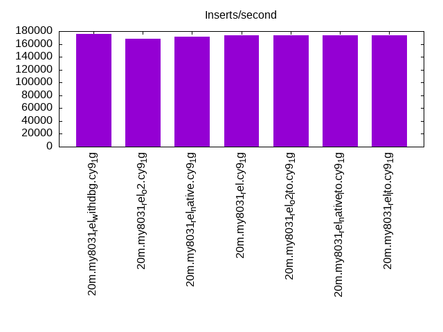
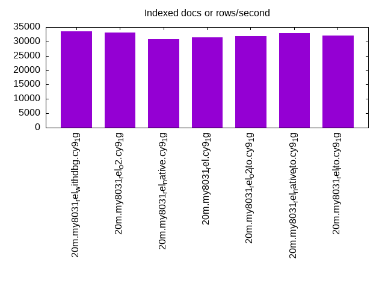
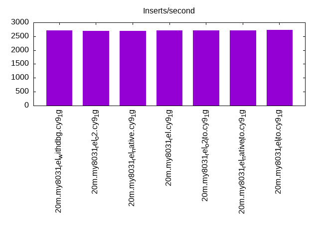
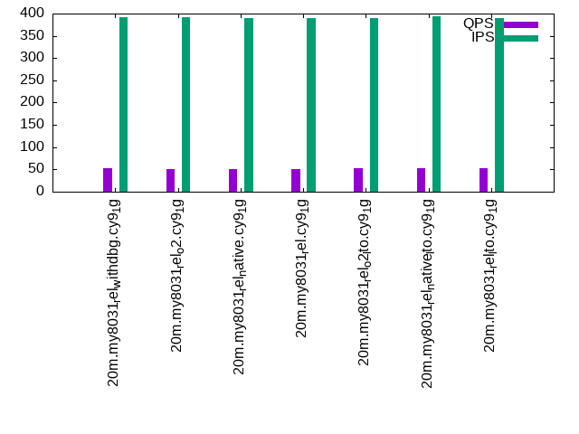
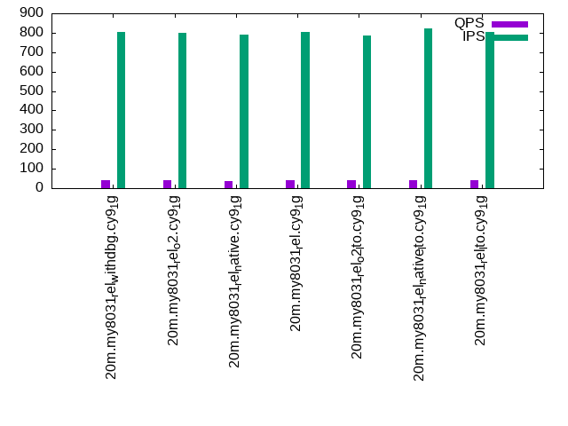
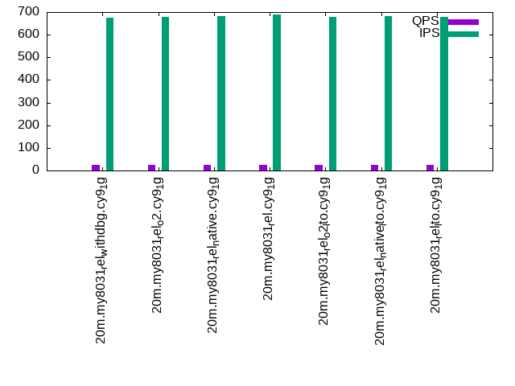

This is a report for the insert benchmark with 20M docs and 4 client(s). It is generated by scripts (bash, awk, sed) and Tufte might not be impressed. An overview of the insert benchmark is here and a short update is here. Below, by DBMS, I mean DBMS+version.config. An example is my8020.c10b40 where my means MySQL, 8020 is version 8.0.20 and c10b40 is the name for the configuration file.
The test server has 8 AMD cores, 16G RAM and an NVMe SSD. It is described here as the Beelink. The benchmark was run with 4 clients and there were 1 or 2 connections per client (1 for queries, 1 for inserts). The benchmark loads 20M rows without secondary indexes, creates secondary indexes, loads another 20M rows then does 3 read+write tests for one hour each that do queries as fast as possible with 100, 500 and then 1000 writes/second/client concurrent with the queries. There is 1 table. The database is cached by the OS but not by InnoDB. Clients and the DBMS share one server. The per-database configs are in the per-database subdirectories here.
The tested DBMS are:
The numbers are inserts/s for l.i0 and l.i1, indexed docs (or rows) /s for l.x and queries/s for q*.2. The values are the average rate over the entire test for inserts (IPS) and queries (QPS). The range of values for IPS and QPS is split into 3 parts: bottom 25%, middle 50%, top 25%. Values in the bottom 25% have a red background, values in the top 25% have a green background and values in the middle have no color. A gray background is used for values that can be ignored because the DBMS did not sustain the target insert rate. Red backgrounds are not used when the minimum value is within 80% of the max value.
| dbms | l.i0 | l.x | l.i1 | q100.1 | q500.1 | q1000.1 |
|---|---|---|---|---|---|---|
| 20m.my8031_rel_withdbg.cy9_1g | 175438 | 33612 | 2705 | 52 | 39 | 26 |
| 20m.my8031_rel_o2.cy9_1g | 168067 | 33059 | 2694 | 51 | 39 | 26 |
| 20m.my8031_rel_native.cy9_1g | 170940 | 30781 | 2688 | 50 | 38 | 25 |
| 20m.my8031_rel.cy9_1g | 173913 | 31406 | 2706 | 50 | 39 | 25 |
| 20m.my8031_rel_o2_lto.cy9_1g | 173913 | 31854 | 2708 | 52 | 39 | 26 |
| 20m.my8031_rel_native_lto.cy9_1g | 173913 | 33005 | 2720 | 52 | 40 | 26 |
| 20m.my8031_rel_lto.cy9_1g | 173913 | 32109 | 2731 | 52 | 40 | 26 |
This table has relative throughput, throughput for the DBMS relative to the DBMS in the first line, using the absolute throughput from the previous table.
| dbms | l.i0 | l.x | l.i1 | q100.1 | q500.1 | q1000.1 |
|---|---|---|---|---|---|---|
| 20m.my8031_rel_withdbg.cy9_1g | 1.00 | 1.00 | 1.00 | 1.00 | 1.00 | 1.00 |
| 20m.my8031_rel_o2.cy9_1g | 0.96 | 0.98 | 1.00 | 0.98 | 1.00 | 1.00 |
| 20m.my8031_rel_native.cy9_1g | 0.97 | 0.92 | 0.99 | 0.96 | 0.97 | 0.96 |
| 20m.my8031_rel.cy9_1g | 0.99 | 0.93 | 1.00 | 0.96 | 1.00 | 0.96 |
| 20m.my8031_rel_o2_lto.cy9_1g | 0.99 | 0.95 | 1.00 | 1.00 | 1.00 | 1.00 |
| 20m.my8031_rel_native_lto.cy9_1g | 0.99 | 0.98 | 1.01 | 1.00 | 1.03 | 1.00 |
| 20m.my8031_rel_lto.cy9_1g | 0.99 | 0.96 | 1.01 | 1.00 | 1.03 | 1.00 |
This lists the average rate of inserts/s for the tests that do inserts concurrent with queries. For such tests the query rate is listed in the table above. The read+write tests are setup so that the insert rate should match the target rate every second. Cells that are not at least 95% of the target have a red background to indicate a failure to satisfy the target.
| dbms | q100.1 | q500.1 | q1000.1 |
|---|---|---|---|
| my8031_rel_withdbg.cy9_1g | 392 | 803 | 676 |
| my8031_rel_o2.cy9_1g | 391 | 800 | 677 |
| my8031_rel_native.cy9_1g | 389 | 789 | 681 |
| my8031_rel.cy9_1g | 390 | 805 | 689 |
| my8031_rel_o2_lto.cy9_1g | 389 | 786 | 677 |
| my8031_rel_native_lto.cy9_1g | 394 | 822 | 681 |
| my8031_rel_lto.cy9_1g | 390 | 802 | 680 |
| target | 400 | 2000 | 4000 |
l.i0: load without secondary indexes. Graphs for performance per 1-second interval are here.
Average throughput:
Insert response time histogram: each cell has the percentage of responses that take <= the time in the header and max is the max response time in seconds. For the max column values in the top 25% of the range have a red background and in the bottom 25% of the range have a green background. The red background is not used when the min value is within 80% of the max value.
| dbms | 256us | 1ms | 4ms | 16ms | 64ms | 256ms | 1s | 4s | 16s | gt | max |
|---|---|---|---|---|---|---|---|---|---|---|---|
| my8031_rel_withdbg.cy9_1g | 98.340 | 1.333 | 0.304 | 0.024 | 0.132 | ||||||
| my8031_rel_o2.cy9_1g | 98.106 | 1.532 | 0.333 | 0.028 | 0.179 | ||||||
| my8031_rel_native.cy9_1g | 98.216 | 1.474 | 0.283 | 0.027 | 0.135 | ||||||
| my8031_rel.cy9_1g | 98.258 | 1.401 | 0.312 | 0.029 | 0.140 | ||||||
| my8031_rel_o2_lto.cy9_1g | 98.279 | 1.303 | 0.397 | 0.021 | 0.160 | ||||||
| my8031_rel_native_lto.cy9_1g | 98.093 | 1.511 | 0.367 | 0.029 | 0.156 | ||||||
| my8031_rel_lto.cy9_1g | 98.138 | 1.470 | 0.355 | 0.036 | 0.153 |
Performance metrics for the DBMS listed above. Some are normalized by throughput, others are not. Legend for results is here.
ips qps rps rmbps wps wmbps rpq rkbpq wpi wkbpi csps cpups cspq cpupq dbgb1 dbgb2 rss maxop p50 p99 tag 175438 0 0 0.0 415.6 50.8 0.000 0.000 0.002 0.296 19236 61.8 0.110 28 1.3 9.9 1.4 0.132 52665 12286 20m.my8031_rel_withdbg.cy9_1g 168067 0 0 0.0 408.8 48.8 0.000 0.000 0.002 0.298 18505 60.6 0.110 29 1.3 9.9 1.4 0.179 50165 22191 20m.my8031_rel_o2.cy9_1g 170940 0 0 0.0 413.0 49.2 0.000 0.000 0.002 0.295 18898 61.2 0.111 29 1.3 9.9 1.4 0.135 50844 28569 20m.my8031_rel_native.cy9_1g 173913 0 0 0.0 425.7 49.7 0.000 0.000 0.002 0.293 19009 60.7 0.109 28 1.3 9.9 1.4 0.140 52144 21177 20m.my8031_rel.cy9_1g 173913 0 0 0.0 431.0 49.6 0.000 0.000 0.002 0.292 19092 60.1 0.110 28 1.3 9.9 1.4 0.160 52541 18680 20m.my8031_rel_o2_lto.cy9_1g 173913 0 0 0.0 427.0 49.7 0.000 0.000 0.002 0.293 18990 59.5 0.109 27 1.3 9.9 1.4 0.156 53342 20977 20m.my8031_rel_native_lto.cy9_1g 173913 0 0 0.0 424.9 49.7 0.000 0.000 0.002 0.292 18789 59.9 0.108 28 1.3 9.9 1.4 0.153 52590 13286 20m.my8031_rel_lto.cy9_1g
l.x: create secondary indexes.
Average throughput:
Performance metrics for the DBMS listed above. Some are normalized by throughput, others are not. Legend for results is here.
ips qps rps rmbps wps wmbps rpq rkbpq wpi wkbpi csps cpups cspq cpupq dbgb1 dbgb2 rss maxop p50 p99 tag 33612 0 177 11.6 1060.4 34.3 0.005 0.355 0.032 1.044 9644 9.7 0.287 23 3.0 11.6 1.5 0.076 NA NA 20m.my8031_rel_withdbg.cy9_1g 33059 0 174 11.5 1049.6 33.5 0.005 0.355 0.032 1.037 9657 10.2 0.292 25 3.0 11.6 1.5 0.115 NA NA 20m.my8031_rel_o2.cy9_1g 30781 0 162 10.7 966.7 31.4 0.005 0.355 0.031 1.044 9026 9.0 0.293 23 3.0 11.6 1.5 0.094 NA NA 20m.my8031_rel_native.cy9_1g 31406 0 165 10.8 989.4 31.8 0.005 0.353 0.032 1.037 9044 9.7 0.288 25 3.0 11.6 1.5 0.163 NA NA 20m.my8031_rel.cy9_1g 31854 0 167 11.0 1002.2 32.2 0.005 0.353 0.031 1.034 9034 9.4 0.284 24 3.0 11.6 1.5 0.111 NA NA 20m.my8031_rel_o2_lto.cy9_1g 33005 0 174 11.4 1040.4 33.5 0.005 0.355 0.032 1.039 9533 8.8 0.289 21 3.0 11.6 1.5 0.176 NA NA 20m.my8031_rel_native_lto.cy9_1g 32109 0 169 11.1 1003.7 32.5 0.005 0.353 0.031 1.036 9179 9.0 0.286 22 3.0 11.6 1.5 0.136 NA NA 20m.my8031_rel_lto.cy9_1g
l.i1: continue load after secondary indexes created. Graphs for performance per 1-second interval are here.
Average throughput:
Insert response time histogram: each cell has the percentage of responses that take <= the time in the header and max is the max response time in seconds. For the max column values in the top 25% of the range have a red background and in the bottom 25% of the range have a green background. The red background is not used when the min value is within 80% of the max value.
| dbms | 256us | 1ms | 4ms | 16ms | 64ms | 256ms | 1s | 4s | 16s | gt | max |
|---|---|---|---|---|---|---|---|---|---|---|---|
| my8031_rel_withdbg.cy9_1g | 0.017 | 18.766 | 40.317 | 38.721 | 1.970 | 0.177 | 0.032 | 6.969 | |||
| my8031_rel_o2.cy9_1g | 0.010 | 16.402 | 42.093 | 39.439 | 1.853 | 0.170 | 0.034 | 7.665 | |||
| my8031_rel_native.cy9_1g | 0.019 | 17.883 | 40.870 | 39.069 | 1.945 | 0.185 | 0.028 | 8.279 | |||
| my8031_rel.cy9_1g | 0.015 | 17.709 | 41.258 | 38.973 | 1.834 | 0.181 | 0.030 | 8.018 | |||
| my8031_rel_o2_lto.cy9_1g | 0.015 | 18.304 | 40.782 | 38.736 | 1.953 | 0.182 | 0.027 | 7.691 | |||
| my8031_rel_native_lto.cy9_1g | 0.032 | 19.195 | 39.892 | 38.727 | 1.943 | 0.182 | 0.029 | 7.840 | |||
| my8031_rel_lto.cy9_1g | 0.037 | 19.645 | 40.005 | 38.197 | 1.911 | 0.177 | 0.028 | 7.941 |
Performance metrics for the DBMS listed above. Some are normalized by throughput, others are not. Legend for results is here.
ips qps rps rmbps wps wmbps rpq rkbpq wpi wkbpi csps cpups cspq cpupq dbgb1 dbgb2 rss maxop p50 p99 tag 2705 0 0 0.0 975.6 18.1 0.000 0.001 0.361 6.870 6372 11.4 2.355 337 7.8 16.4 1.5 6.969 599 0 20m.my8031_rel_withdbg.cy9_1g 2694 0 0 0.0 970.8 18.0 0.000 0.001 0.360 6.858 6372 11.9 2.366 353 7.8 16.4 1.5 7.665 599 0 20m.my8031_rel_o2.cy9_1g 2688 0 0 0.0 968.0 18.0 0.000 0.001 0.360 6.844 6362 11.5 2.367 342 7.8 16.4 1.5 8.279 599 0 20m.my8031_rel_native.cy9_1g 2706 0 0 0.0 969.8 18.0 0.000 0.001 0.358 6.827 6359 11.6 2.350 343 7.8 16.4 1.5 8.018 599 0 20m.my8031_rel.cy9_1g 2708 0 0 0.0 975.6 18.2 0.000 0.001 0.360 6.869 6427 11.4 2.373 337 7.8 16.4 1.5 7.691 599 0 20m.my8031_rel_o2_lto.cy9_1g 2720 0 0 0.0 977.5 18.2 0.000 0.001 0.359 6.845 6377 11.1 2.345 326 7.8 16.4 1.5 7.840 599 0 20m.my8031_rel_native_lto.cy9_1g 2731 0 0 0.0 977.7 18.2 0.000 0.001 0.358 6.826 6374 11.1 2.334 325 7.8 16.4 1.5 7.941 599 0 20m.my8031_rel_lto.cy9_1g
q100.1: range queries with 100 insert/s per client. Graphs for performance per 1-second interval are here.
Average throughput:
Query response time histogram: each cell has the percentage of responses that take <= the time in the header and max is the max response time in seconds. For max values in the top 25% of the range have a red background and in the bottom 25% of the range have a green background. The red background is not used when the min value is within 80% of the max value.
| dbms | 256us | 1ms | 4ms | 16ms | 64ms | 256ms | 1s | 4s | 16s | gt | max |
|---|---|---|---|---|---|---|---|---|---|---|---|
| my8031_rel_withdbg.cy9_1g | 10.778 | 3.700 | 7.877 | 34.046 | 40.172 | 3.420 | 0.007 | 1.790 | |||
| my8031_rel_o2.cy9_1g | 10.669 | 3.789 | 7.346 | 33.387 | 41.394 | 3.412 | 0.003 | 1.626 | |||
| my8031_rel_native.cy9_1g | 10.300 | 3.524 | 7.324 | 33.182 | 42.252 | 3.416 | 0.001 | 1.439 | |||
| my8031_rel.cy9_1g | 10.232 | 3.544 | 7.341 | 33.387 | 42.006 | 3.489 | 0.966 | ||||
| my8031_rel_o2_lto.cy9_1g | 11.070 | 3.706 | 7.815 | 34.086 | 39.985 | 3.335 | 0.004 | 1.305 | |||
| my8031_rel_native_lto.cy9_1g | 0.001 | 10.760 | 3.322 | 7.495 | 34.154 | 40.941 | 3.322 | 0.004 | 1.958 | ||
| my8031_rel_lto.cy9_1g | 11.091 | 3.415 | 7.894 | 34.338 | 39.979 | 3.277 | 0.006 | 1.627 |
Insert response time histogram: each cell has the percentage of responses that take <= the time in the header and max is the max response time in seconds. For max values in the top 25% of the range have a red background and in the bottom 25% of the range have a green background. The red background is not used when the min value is within 80% of the max value.
| dbms | 256us | 1ms | 4ms | 16ms | 64ms | 256ms | 1s | 4s | 16s | gt | max |
|---|---|---|---|---|---|---|---|---|---|---|---|
| my8031_rel_withdbg.cy9_1g | 0.271 | 1.625 | 31.167 | 63.271 | 3.667 | 1.951 | |||||
| my8031_rel_o2.cy9_1g | 0.243 | 1.306 | 29.299 | 65.868 | 3.285 | 2.095 | |||||
| my8031_rel_native.cy9_1g | 0.174 | 1.257 | 28.618 | 66.382 | 3.569 | 2.457 | |||||
| my8031_rel.cy9_1g | 0.208 | 1.326 | 29.299 | 65.639 | 3.528 | 2.154 | |||||
| my8031_rel_o2_lto.cy9_1g | 0.292 | 1.458 | 30.924 | 63.569 | 3.757 | 2.442 | |||||
| my8031_rel_native_lto.cy9_1g | 0.250 | 1.410 | 30.444 | 64.715 | 3.181 | 2.190 | |||||
| my8031_rel_lto.cy9_1g | 0.292 | 1.417 | 30.889 | 63.889 | 3.514 | 3.388 |
Performance metrics for the DBMS listed above. Some are normalized by throughput, others are not. Legend for results is here.
ips qps rps rmbps wps wmbps rpq rkbpq wpi wkbpi csps cpups cspq cpupq dbgb1 dbgb2 rss maxop p50 p99 tag 392 52 8 0.1 1122.8 14.9 0.160 2.646 2.867 38.877 7464 5.0 143.816 7707 8.4 17.0 1.5 1.790 16 0 20m.my8031_rel_withdbg.cy9_1g 391 51 10 0.1 1118.0 14.7 0.195 3.004 2.859 38.623 7447 5.1 146.315 8015 8.4 17.0 1.5 1.626 16 0 20m.my8031_rel_o2.cy9_1g 389 50 9 0.1 1115.6 14.7 0.187 2.976 2.867 38.651 7447 5.0 148.060 7952 8.4 17.0 1.5 1.439 16 0 20m.my8031_rel_native.cy9_1g 390 50 9 0.1 1115.4 14.7 0.172 2.809 2.857 38.588 7435 5.0 147.524 7937 8.4 17.0 1.5 0.966 16 0 20m.my8031_rel.cy9_1g 389 52 10 0.2 1123.9 14.9 0.196 3.041 2.888 39.150 7467 5.0 142.767 7648 8.4 17.0 1.5 1.305 16 0 20m.my8031_rel_o2_lto.cy9_1g 394 52 10 0.2 1125.3 14.9 0.194 3.008 2.856 38.671 7479 4.9 144.374 7568 8.4 17.0 1.5 1.958 16 0 20m.my8031_rel_native_lto.cy9_1g 390 52 10 0.2 1121.7 14.9 0.197 3.035 2.878 39.103 7444 4.9 142.338 7495 8.4 17.0 1.5 1.627 16 0 20m.my8031_rel_lto.cy9_1g
q500.1: range queries with 500 insert/s per client. Graphs for performance per 1-second interval are here.
Average throughput:
Query response time histogram: each cell has the percentage of responses that take <= the time in the header and max is the max response time in seconds. For max values in the top 25% of the range have a red background and in the bottom 25% of the range have a green background. The red background is not used when the min value is within 80% of the max value.
| dbms | 256us | 1ms | 4ms | 16ms | 64ms | 256ms | 1s | 4s | 16s | gt | max |
|---|---|---|---|---|---|---|---|---|---|---|---|
| my8031_rel_withdbg.cy9_1g | 7.077 | 3.716 | 6.008 | 29.630 | 45.700 | 7.832 | 0.037 | 1.872 | |||
| my8031_rel_o2.cy9_1g | 6.834 | 3.905 | 5.956 | 29.163 | 46.278 | 7.826 | 0.037 | 2.481 | |||
| my8031_rel_native.cy9_1g | 0.001 | 7.157 | 3.659 | 5.847 | 28.706 | 46.480 | 8.117 | 0.033 | 2.018 | ||
| my8031_rel.cy9_1g | 0.003 | 7.123 | 3.814 | 5.884 | 29.305 | 46.128 | 7.712 | 0.030 | 1.593 | ||
| my8031_rel_o2_lto.cy9_1g | 0.001 | 7.027 | 3.711 | 6.050 | 29.352 | 45.907 | 7.914 | 0.038 | 2.088 | ||
| my8031_rel_native_lto.cy9_1g | 7.248 | 3.636 | 6.152 | 30.114 | 45.625 | 7.200 | 0.025 | 1.804 | |||
| my8031_rel_lto.cy9_1g | 7.462 | 3.489 | 6.112 | 29.913 | 45.438 | 7.565 | 0.022 | 1.929 |
Insert response time histogram: each cell has the percentage of responses that take <= the time in the header and max is the max response time in seconds. For max values in the top 25% of the range have a red background and in the bottom 25% of the range have a green background. The red background is not used when the min value is within 80% of the max value.
| dbms | 256us | 1ms | 4ms | 16ms | 64ms | 256ms | 1s | 4s | 16s | gt | max |
|---|---|---|---|---|---|---|---|---|---|---|---|
| my8031_rel_withdbg.cy9_1g | 1.793 | 8.171 | 53.981 | 35.267 | 0.789 | 2.512 | |||||
| my8031_rel_o2.cy9_1g | 1.772 | 7.985 | 53.879 | 35.601 | 0.762 | 2.418 | |||||
| my8031_rel_native.cy9_1g | 1.726 | 7.825 | 53.286 | 36.329 | 0.833 | 3.351 | |||||
| my8031_rel.cy9_1g | 1.868 | 8.261 | 53.893 | 35.192 | 0.786 | 2.637 | |||||
| my8031_rel_o2_lto.cy9_1g | 0.001 | 1.669 | 7.512 | 53.292 | 36.735 | 0.790 | 2.908 | ||||
| my8031_rel_native_lto.cy9_1g | 1.717 | 8.447 | 54.721 | 34.513 | 0.603 | 3.191 | |||||
| my8031_rel_lto.cy9_1g | 0.001 | 1.743 | 7.839 | 54.226 | 35.453 | 0.737 | 2.728 |
Performance metrics for the DBMS listed above. Some are normalized by throughput, others are not. Legend for results is here.
ips qps rps rmbps wps wmbps rpq rkbpq wpi wkbpi csps cpups cspq cpupq dbgb1 dbgb2 rss maxop p50 p99 tag 803 39 7 0.1 1028.8 14.0 0.181 3.183 1.281 17.864 6975 5.9 178.387 12071 9.4 18.0 1.5 1.872 16 0 20m.my8031_rel_withdbg.cy9_1g 800 39 8 0.1 1025.5 13.9 0.198 3.291 1.282 17.804 6972 5.9 180.616 12228 9.5 18.0 1.5 2.481 16 0 20m.my8031_rel_o2.cy9_1g 789 38 7 0.1 1016.2 13.8 0.185 3.118 1.289 17.875 6912 5.7 179.990 11875 9.5 18.0 1.5 2.018 16 0 20m.my8031_rel_native.cy9_1g 805 39 7 0.1 1030.1 14.0 0.185 3.242 1.280 17.793 6996 5.9 179.835 12134 9.4 18.0 1.5 1.593 16 0 20m.my8031_rel.cy9_1g 786 39 7 0.1 1015.7 13.8 0.188 3.161 1.293 18.031 6887 5.8 177.957 11990 9.4 18.0 1.5 2.088 16 0 20m.my8031_rel_o2_lto.cy9_1g 822 40 8 0.1 1056.2 14.4 0.188 3.150 1.286 17.908 7143 5.9 177.685 11741 9.4 18.0 1.5 1.804 16 0 20m.my8031_rel_native_lto.cy9_1g 802 40 8 0.1 1036.5 14.1 0.189 3.117 1.293 18.020 7017 5.8 177.186 11717 9.4 18.0 1.5 1.929 16 0 20m.my8031_rel_lto.cy9_1g
q1000.1: range queries with 1000 insert/s per client. Graphs for performance per 1-second interval are here.
Average throughput:
Query response time histogram: each cell has the percentage of responses that take <= the time in the header and max is the max response time in seconds. For max values in the top 25% of the range have a red background and in the bottom 25% of the range have a green background. The red background is not used when the min value is within 80% of the max value.
| dbms | 256us | 1ms | 4ms | 16ms | 64ms | 256ms | 1s | 4s | 16s | gt | max |
|---|---|---|---|---|---|---|---|---|---|---|---|
| my8031_rel_withdbg.cy9_1g | 5.767 | 3.607 | 4.963 | 21.750 | 43.514 | 20.200 | 0.199 | 2.872 | |||
| my8031_rel_o2.cy9_1g | nonzero | 5.597 | 3.802 | 4.799 | 21.194 | 43.830 | 20.574 | 0.203 | 2.661 | ||
| my8031_rel_native.cy9_1g | 5.670 | 3.641 | 4.717 | 20.779 | 44.104 | 20.875 | 0.214 | 2.656 | |||
| my8031_rel.cy9_1g | 5.639 | 3.708 | 4.824 | 20.863 | 43.863 | 20.896 | 0.207 | 2.283 | |||
| my8031_rel_o2_lto.cy9_1g | 5.929 | 3.596 | 4.938 | 21.427 | 43.704 | 20.191 | 0.216 | 2.838 | |||
| my8031_rel_native_lto.cy9_1g | 5.954 | 3.536 | 4.881 | 21.441 | 43.382 | 20.611 | 0.196 | 2.911 | |||
| my8031_rel_lto.cy9_1g | 6.050 | 3.546 | 4.936 | 21.476 | 43.477 | 20.309 | 0.204 | 2.823 |
Insert response time histogram: each cell has the percentage of responses that take <= the time in the header and max is the max response time in seconds. For max values in the top 25% of the range have a red background and in the bottom 25% of the range have a green background. The red background is not used when the min value is within 80% of the max value.
| dbms | 256us | 1ms | 4ms | 16ms | 64ms | 256ms | 1s | 4s | 16s | gt | max |
|---|---|---|---|---|---|---|---|---|---|---|---|
| my8031_rel_withdbg.cy9_1g | 3.451 | 5.365 | 44.721 | 44.998 | 1.465 | 2.668 | |||||
| my8031_rel_o2.cy9_1g | 3.274 | 5.609 | 45.090 | 44.427 | 1.601 | 3.069 | |||||
| my8031_rel_native.cy9_1g | 3.472 | 5.888 | 45.002 | 44.006 | 1.632 | 3.268 | |||||
| my8031_rel.cy9_1g | 3.472 | 6.146 | 45.301 | 43.483 | 1.599 | 2.889 | |||||
| my8031_rel_o2_lto.cy9_1g | 3.467 | 5.552 | 44.699 | 44.733 | 1.549 | 2.578 | |||||
| my8031_rel_native_lto.cy9_1g | 0.001 | 3.568 | 5.683 | 45.146 | 44.061 | 1.542 | 3.582 | ||||
| my8031_rel_lto.cy9_1g | 3.644 | 5.553 | 44.940 | 44.322 | 1.542 | 2.842 |
Performance metrics for the DBMS listed above. Some are normalized by throughput, others are not. Legend for results is here.
ips qps rps rmbps wps wmbps rpq rkbpq wpi wkbpi csps cpups cspq cpupq dbgb1 dbgb2 rss maxop p50 p99 tag 676 26 4 0.1 714.5 10.0 0.160 2.834 1.058 15.209 5030 4.8 194.944 14884 10.0 18.6 1.4 2.872 0 0 20m.my8031_rel_withdbg.cy9_1g 677 26 4 0.1 713.3 10.0 0.168 2.898 1.054 15.086 5031 4.9 197.296 15373 10.0 18.6 1.4 2.661 0 0 20m.my8031_rel_o2.cy9_1g 681 25 4 0.1 711.0 9.9 0.170 2.954 1.045 14.950 5022 4.8 199.276 15238 10.0 18.6 1.4 2.656 0 0 20m.my8031_rel_native.cy9_1g 689 25 4 0.1 714.1 10.0 0.165 2.923 1.036 14.835 5037 4.9 199.097 15494 10.0 18.6 1.3 2.283 0 0 20m.my8031_rel.cy9_1g 677 26 4 0.1 714.5 10.0 0.165 2.877 1.055 15.157 5032 4.8 195.788 14942 10.0 18.6 1.4 2.838 0 0 20m.my8031_rel_o2_lto.cy9_1g 681 26 4 0.1 714.4 10.0 0.167 2.883 1.048 15.054 5022 4.8 196.943 15059 10.0 18.6 1.4 2.911 0 0 20m.my8031_rel_native_lto.cy9_1g 680 26 4 0.1 715.7 10.0 0.164 2.854 1.053 15.119 5028 4.8 195.625 14942 10.0 18.6 1.4 2.823 0 0 20m.my8031_rel_lto.cy9_1g
l.i0: load without secondary indexes
Performance metrics for all DBMS, not just the ones listed above. Some are normalized by throughput, others are not. Legend for results is here.
ips qps rps rmbps wps wmbps rpq rkbpq wpi wkbpi csps cpups cspq cpupq dbgb1 dbgb2 rss maxop p50 p99 tag 175438 0 0 0.0 415.6 50.8 0.000 0.000 0.002 0.296 19236 61.8 0.110 28 1.3 9.9 1.4 0.132 52665 12286 20m.my8031_rel_withdbg.cy9_1g 168067 0 0 0.0 408.8 48.8 0.000 0.000 0.002 0.298 18505 60.6 0.110 29 1.3 9.9 1.4 0.179 50165 22191 20m.my8031_rel_o2.cy9_1g 170940 0 0 0.0 413.0 49.2 0.000 0.000 0.002 0.295 18898 61.2 0.111 29 1.3 9.9 1.4 0.135 50844 28569 20m.my8031_rel_native.cy9_1g 173913 0 0 0.0 425.7 49.7 0.000 0.000 0.002 0.293 19009 60.7 0.109 28 1.3 9.9 1.4 0.140 52144 21177 20m.my8031_rel.cy9_1g 173913 0 0 0.0 431.0 49.6 0.000 0.000 0.002 0.292 19092 60.1 0.110 28 1.3 9.9 1.4 0.160 52541 18680 20m.my8031_rel_o2_lto.cy9_1g 173913 0 0 0.0 427.0 49.7 0.000 0.000 0.002 0.293 18990 59.5 0.109 27 1.3 9.9 1.4 0.156 53342 20977 20m.my8031_rel_native_lto.cy9_1g 173913 0 0 0.0 424.9 49.7 0.000 0.000 0.002 0.292 18789 59.9 0.108 28 1.3 9.9 1.4 0.153 52590 13286 20m.my8031_rel_lto.cy9_1g
l.x: create secondary indexes
Performance metrics for all DBMS, not just the ones listed above. Some are normalized by throughput, others are not. Legend for results is here.
ips qps rps rmbps wps wmbps rpq rkbpq wpi wkbpi csps cpups cspq cpupq dbgb1 dbgb2 rss maxop p50 p99 tag 33612 0 177 11.6 1060.4 34.3 0.005 0.355 0.032 1.044 9644 9.7 0.287 23 3.0 11.6 1.5 0.076 NA NA 20m.my8031_rel_withdbg.cy9_1g 33059 0 174 11.5 1049.6 33.5 0.005 0.355 0.032 1.037 9657 10.2 0.292 25 3.0 11.6 1.5 0.115 NA NA 20m.my8031_rel_o2.cy9_1g 30781 0 162 10.7 966.7 31.4 0.005 0.355 0.031 1.044 9026 9.0 0.293 23 3.0 11.6 1.5 0.094 NA NA 20m.my8031_rel_native.cy9_1g 31406 0 165 10.8 989.4 31.8 0.005 0.353 0.032 1.037 9044 9.7 0.288 25 3.0 11.6 1.5 0.163 NA NA 20m.my8031_rel.cy9_1g 31854 0 167 11.0 1002.2 32.2 0.005 0.353 0.031 1.034 9034 9.4 0.284 24 3.0 11.6 1.5 0.111 NA NA 20m.my8031_rel_o2_lto.cy9_1g 33005 0 174 11.4 1040.4 33.5 0.005 0.355 0.032 1.039 9533 8.8 0.289 21 3.0 11.6 1.5 0.176 NA NA 20m.my8031_rel_native_lto.cy9_1g 32109 0 169 11.1 1003.7 32.5 0.005 0.353 0.031 1.036 9179 9.0 0.286 22 3.0 11.6 1.5 0.136 NA NA 20m.my8031_rel_lto.cy9_1g
l.i1: continue load after secondary indexes created
Performance metrics for all DBMS, not just the ones listed above. Some are normalized by throughput, others are not. Legend for results is here.
ips qps rps rmbps wps wmbps rpq rkbpq wpi wkbpi csps cpups cspq cpupq dbgb1 dbgb2 rss maxop p50 p99 tag 2705 0 0 0.0 975.6 18.1 0.000 0.001 0.361 6.870 6372 11.4 2.355 337 7.8 16.4 1.5 6.969 599 0 20m.my8031_rel_withdbg.cy9_1g 2694 0 0 0.0 970.8 18.0 0.000 0.001 0.360 6.858 6372 11.9 2.366 353 7.8 16.4 1.5 7.665 599 0 20m.my8031_rel_o2.cy9_1g 2688 0 0 0.0 968.0 18.0 0.000 0.001 0.360 6.844 6362 11.5 2.367 342 7.8 16.4 1.5 8.279 599 0 20m.my8031_rel_native.cy9_1g 2706 0 0 0.0 969.8 18.0 0.000 0.001 0.358 6.827 6359 11.6 2.350 343 7.8 16.4 1.5 8.018 599 0 20m.my8031_rel.cy9_1g 2708 0 0 0.0 975.6 18.2 0.000 0.001 0.360 6.869 6427 11.4 2.373 337 7.8 16.4 1.5 7.691 599 0 20m.my8031_rel_o2_lto.cy9_1g 2720 0 0 0.0 977.5 18.2 0.000 0.001 0.359 6.845 6377 11.1 2.345 326 7.8 16.4 1.5 7.840 599 0 20m.my8031_rel_native_lto.cy9_1g 2731 0 0 0.0 977.7 18.2 0.000 0.001 0.358 6.826 6374 11.1 2.334 325 7.8 16.4 1.5 7.941 599 0 20m.my8031_rel_lto.cy9_1g
q100.1: range queries with 100 insert/s per client
Performance metrics for all DBMS, not just the ones listed above. Some are normalized by throughput, others are not. Legend for results is here.
ips qps rps rmbps wps wmbps rpq rkbpq wpi wkbpi csps cpups cspq cpupq dbgb1 dbgb2 rss maxop p50 p99 tag 392 52 8 0.1 1122.8 14.9 0.160 2.646 2.867 38.877 7464 5.0 143.816 7707 8.4 17.0 1.5 1.790 16 0 20m.my8031_rel_withdbg.cy9_1g 391 51 10 0.1 1118.0 14.7 0.195 3.004 2.859 38.623 7447 5.1 146.315 8015 8.4 17.0 1.5 1.626 16 0 20m.my8031_rel_o2.cy9_1g 389 50 9 0.1 1115.6 14.7 0.187 2.976 2.867 38.651 7447 5.0 148.060 7952 8.4 17.0 1.5 1.439 16 0 20m.my8031_rel_native.cy9_1g 390 50 9 0.1 1115.4 14.7 0.172 2.809 2.857 38.588 7435 5.0 147.524 7937 8.4 17.0 1.5 0.966 16 0 20m.my8031_rel.cy9_1g 389 52 10 0.2 1123.9 14.9 0.196 3.041 2.888 39.150 7467 5.0 142.767 7648 8.4 17.0 1.5 1.305 16 0 20m.my8031_rel_o2_lto.cy9_1g 394 52 10 0.2 1125.3 14.9 0.194 3.008 2.856 38.671 7479 4.9 144.374 7568 8.4 17.0 1.5 1.958 16 0 20m.my8031_rel_native_lto.cy9_1g 390 52 10 0.2 1121.7 14.9 0.197 3.035 2.878 39.103 7444 4.9 142.338 7495 8.4 17.0 1.5 1.627 16 0 20m.my8031_rel_lto.cy9_1g
q500.1: range queries with 500 insert/s per client
Performance metrics for all DBMS, not just the ones listed above. Some are normalized by throughput, others are not. Legend for results is here.
ips qps rps rmbps wps wmbps rpq rkbpq wpi wkbpi csps cpups cspq cpupq dbgb1 dbgb2 rss maxop p50 p99 tag 803 39 7 0.1 1028.8 14.0 0.181 3.183 1.281 17.864 6975 5.9 178.387 12071 9.4 18.0 1.5 1.872 16 0 20m.my8031_rel_withdbg.cy9_1g 800 39 8 0.1 1025.5 13.9 0.198 3.291 1.282 17.804 6972 5.9 180.616 12228 9.5 18.0 1.5 2.481 16 0 20m.my8031_rel_o2.cy9_1g 789 38 7 0.1 1016.2 13.8 0.185 3.118 1.289 17.875 6912 5.7 179.990 11875 9.5 18.0 1.5 2.018 16 0 20m.my8031_rel_native.cy9_1g 805 39 7 0.1 1030.1 14.0 0.185 3.242 1.280 17.793 6996 5.9 179.835 12134 9.4 18.0 1.5 1.593 16 0 20m.my8031_rel.cy9_1g 786 39 7 0.1 1015.7 13.8 0.188 3.161 1.293 18.031 6887 5.8 177.957 11990 9.4 18.0 1.5 2.088 16 0 20m.my8031_rel_o2_lto.cy9_1g 822 40 8 0.1 1056.2 14.4 0.188 3.150 1.286 17.908 7143 5.9 177.685 11741 9.4 18.0 1.5 1.804 16 0 20m.my8031_rel_native_lto.cy9_1g 802 40 8 0.1 1036.5 14.1 0.189 3.117 1.293 18.020 7017 5.8 177.186 11717 9.4 18.0 1.5 1.929 16 0 20m.my8031_rel_lto.cy9_1g
q1000.1: range queries with 1000 insert/s per client
Performance metrics for all DBMS, not just the ones listed above. Some are normalized by throughput, others are not. Legend for results is here.
ips qps rps rmbps wps wmbps rpq rkbpq wpi wkbpi csps cpups cspq cpupq dbgb1 dbgb2 rss maxop p50 p99 tag 676 26 4 0.1 714.5 10.0 0.160 2.834 1.058 15.209 5030 4.8 194.944 14884 10.0 18.6 1.4 2.872 0 0 20m.my8031_rel_withdbg.cy9_1g 677 26 4 0.1 713.3 10.0 0.168 2.898 1.054 15.086 5031 4.9 197.296 15373 10.0 18.6 1.4 2.661 0 0 20m.my8031_rel_o2.cy9_1g 681 25 4 0.1 711.0 9.9 0.170 2.954 1.045 14.950 5022 4.8 199.276 15238 10.0 18.6 1.4 2.656 0 0 20m.my8031_rel_native.cy9_1g 689 25 4 0.1 714.1 10.0 0.165 2.923 1.036 14.835 5037 4.9 199.097 15494 10.0 18.6 1.3 2.283 0 0 20m.my8031_rel.cy9_1g 677 26 4 0.1 714.5 10.0 0.165 2.877 1.055 15.157 5032 4.8 195.788 14942 10.0 18.6 1.4 2.838 0 0 20m.my8031_rel_o2_lto.cy9_1g 681 26 4 0.1 714.4 10.0 0.167 2.883 1.048 15.054 5022 4.8 196.943 15059 10.0 18.6 1.4 2.911 0 0 20m.my8031_rel_native_lto.cy9_1g 680 26 4 0.1 715.7 10.0 0.164 2.854 1.053 15.119 5028 4.8 195.625 14942 10.0 18.6 1.4 2.823 0 0 20m.my8031_rel_lto.cy9_1g
Insert response time histogram
256us 1ms 4ms 16ms 64ms 256ms 1s 4s 16s gt max tag 0.000 0.000 98.340 1.333 0.304 0.024 0.000 0.000 0.000 0.000 0.132 my8031_rel_withdbg.cy9_1g 0.000 0.000 98.106 1.532 0.333 0.028 0.000 0.000 0.000 0.000 0.179 my8031_rel_o2.cy9_1g 0.000 0.000 98.216 1.474 0.283 0.027 0.000 0.000 0.000 0.000 0.135 my8031_rel_native.cy9_1g 0.000 0.000 98.258 1.401 0.312 0.029 0.000 0.000 0.000 0.000 0.140 my8031_rel.cy9_1g 0.000 0.000 98.279 1.303 0.397 0.021 0.000 0.000 0.000 0.000 0.160 my8031_rel_o2_lto.cy9_1g 0.000 0.000 98.093 1.511 0.367 0.029 0.000 0.000 0.000 0.000 0.156 my8031_rel_native_lto.cy9_1g 0.000 0.000 98.138 1.470 0.355 0.036 0.000 0.000 0.000 0.000 0.153 my8031_rel_lto.cy9_1g
TODO - determine whether there is data for create index response time
Insert response time histogram
256us 1ms 4ms 16ms 64ms 256ms 1s 4s 16s gt max tag 0.000 0.000 0.017 18.766 40.317 38.721 1.970 0.177 0.032 0.000 6.969 my8031_rel_withdbg.cy9_1g 0.000 0.000 0.010 16.402 42.093 39.439 1.853 0.170 0.034 0.000 7.665 my8031_rel_o2.cy9_1g 0.000 0.000 0.019 17.883 40.870 39.069 1.945 0.185 0.028 0.000 8.279 my8031_rel_native.cy9_1g 0.000 0.000 0.015 17.709 41.258 38.973 1.834 0.181 0.030 0.000 8.018 my8031_rel.cy9_1g 0.000 0.000 0.015 18.304 40.782 38.736 1.953 0.182 0.027 0.000 7.691 my8031_rel_o2_lto.cy9_1g 0.000 0.000 0.032 19.195 39.892 38.727 1.943 0.182 0.029 0.000 7.840 my8031_rel_native_lto.cy9_1g 0.000 0.000 0.037 19.645 40.005 38.197 1.911 0.177 0.028 0.000 7.941 my8031_rel_lto.cy9_1g
Query response time histogram
256us 1ms 4ms 16ms 64ms 256ms 1s 4s 16s gt max tag 0.000 10.778 3.700 7.877 34.046 40.172 3.420 0.007 0.000 0.000 1.790 my8031_rel_withdbg.cy9_1g 0.000 10.669 3.789 7.346 33.387 41.394 3.412 0.003 0.000 0.000 1.626 my8031_rel_o2.cy9_1g 0.000 10.300 3.524 7.324 33.182 42.252 3.416 0.001 0.000 0.000 1.439 my8031_rel_native.cy9_1g 0.000 10.232 3.544 7.341 33.387 42.006 3.489 0.000 0.000 0.000 0.966 my8031_rel.cy9_1g 0.000 11.070 3.706 7.815 34.086 39.985 3.335 0.004 0.000 0.000 1.305 my8031_rel_o2_lto.cy9_1g 0.001 10.760 3.322 7.495 34.154 40.941 3.322 0.004 0.000 0.000 1.958 my8031_rel_native_lto.cy9_1g 0.000 11.091 3.415 7.894 34.338 39.979 3.277 0.006 0.000 0.000 1.627 my8031_rel_lto.cy9_1g
Insert response time histogram
256us 1ms 4ms 16ms 64ms 256ms 1s 4s 16s gt max tag 0.000 0.000 0.000 0.271 1.625 31.167 63.271 3.667 0.000 0.000 1.951 my8031_rel_withdbg.cy9_1g 0.000 0.000 0.000 0.243 1.306 29.299 65.868 3.285 0.000 0.000 2.095 my8031_rel_o2.cy9_1g 0.000 0.000 0.000 0.174 1.257 28.618 66.382 3.569 0.000 0.000 2.457 my8031_rel_native.cy9_1g 0.000 0.000 0.000 0.208 1.326 29.299 65.639 3.528 0.000 0.000 2.154 my8031_rel.cy9_1g 0.000 0.000 0.000 0.292 1.458 30.924 63.569 3.757 0.000 0.000 2.442 my8031_rel_o2_lto.cy9_1g 0.000 0.000 0.000 0.250 1.410 30.444 64.715 3.181 0.000 0.000 2.190 my8031_rel_native_lto.cy9_1g 0.000 0.000 0.000 0.292 1.417 30.889 63.889 3.514 0.000 0.000 3.388 my8031_rel_lto.cy9_1g
Query response time histogram
256us 1ms 4ms 16ms 64ms 256ms 1s 4s 16s gt max tag 0.000 7.077 3.716 6.008 29.630 45.700 7.832 0.037 0.000 0.000 1.872 my8031_rel_withdbg.cy9_1g 0.000 6.834 3.905 5.956 29.163 46.278 7.826 0.037 0.000 0.000 2.481 my8031_rel_o2.cy9_1g 0.001 7.157 3.659 5.847 28.706 46.480 8.117 0.033 0.000 0.000 2.018 my8031_rel_native.cy9_1g 0.003 7.123 3.814 5.884 29.305 46.128 7.712 0.030 0.000 0.000 1.593 my8031_rel.cy9_1g 0.001 7.027 3.711 6.050 29.352 45.907 7.914 0.038 0.000 0.000 2.088 my8031_rel_o2_lto.cy9_1g 0.000 7.248 3.636 6.152 30.114 45.625 7.200 0.025 0.000 0.000 1.804 my8031_rel_native_lto.cy9_1g 0.000 7.462 3.489 6.112 29.913 45.438 7.565 0.022 0.000 0.000 1.929 my8031_rel_lto.cy9_1g
Insert response time histogram
256us 1ms 4ms 16ms 64ms 256ms 1s 4s 16s gt max tag 0.000 0.000 0.000 1.793 8.171 53.981 35.267 0.789 0.000 0.000 2.512 my8031_rel_withdbg.cy9_1g 0.000 0.000 0.000 1.772 7.985 53.879 35.601 0.762 0.000 0.000 2.418 my8031_rel_o2.cy9_1g 0.000 0.000 0.000 1.726 7.825 53.286 36.329 0.833 0.000 0.000 3.351 my8031_rel_native.cy9_1g 0.000 0.000 0.000 1.868 8.261 53.893 35.192 0.786 0.000 0.000 2.637 my8031_rel.cy9_1g 0.000 0.000 0.001 1.669 7.512 53.292 36.735 0.790 0.000 0.000 2.908 my8031_rel_o2_lto.cy9_1g 0.000 0.000 0.000 1.717 8.447 54.721 34.513 0.603 0.000 0.000 3.191 my8031_rel_native_lto.cy9_1g 0.000 0.000 0.001 1.743 7.839 54.226 35.453 0.737 0.000 0.000 2.728 my8031_rel_lto.cy9_1g
Query response time histogram
256us 1ms 4ms 16ms 64ms 256ms 1s 4s 16s gt max tag 0.000 5.767 3.607 4.963 21.750 43.514 20.200 0.199 0.000 0.000 2.872 my8031_rel_withdbg.cy9_1g nonzero 5.597 3.802 4.799 21.194 43.830 20.574 0.203 0.000 0.000 2.661 my8031_rel_o2.cy9_1g 0.000 5.670 3.641 4.717 20.779 44.104 20.875 0.214 0.000 0.000 2.656 my8031_rel_native.cy9_1g 0.000 5.639 3.708 4.824 20.863 43.863 20.896 0.207 0.000 0.000 2.283 my8031_rel.cy9_1g 0.000 5.929 3.596 4.938 21.427 43.704 20.191 0.216 0.000 0.000 2.838 my8031_rel_o2_lto.cy9_1g 0.000 5.954 3.536 4.881 21.441 43.382 20.611 0.196 0.000 0.000 2.911 my8031_rel_native_lto.cy9_1g 0.000 6.050 3.546 4.936 21.476 43.477 20.309 0.204 0.000 0.000 2.823 my8031_rel_lto.cy9_1g
Insert response time histogram
256us 1ms 4ms 16ms 64ms 256ms 1s 4s 16s gt max tag 0.000 0.000 0.000 3.451 5.365 44.721 44.998 1.465 0.000 0.000 2.668 my8031_rel_withdbg.cy9_1g 0.000 0.000 0.000 3.274 5.609 45.090 44.427 1.601 0.000 0.000 3.069 my8031_rel_o2.cy9_1g 0.000 0.000 0.000 3.472 5.888 45.002 44.006 1.632 0.000 0.000 3.268 my8031_rel_native.cy9_1g 0.000 0.000 0.000 3.472 6.146 45.301 43.483 1.599 0.000 0.000 2.889 my8031_rel.cy9_1g 0.000 0.000 0.000 3.467 5.552 44.699 44.733 1.549 0.000 0.000 2.578 my8031_rel_o2_lto.cy9_1g 0.000 0.000 0.001 3.568 5.683 45.146 44.061 1.542 0.000 0.000 3.582 my8031_rel_native_lto.cy9_1g 0.000 0.000 0.000 3.644 5.553 44.940 44.322 1.542 0.000 0.000 2.842 my8031_rel_lto.cy9_1g